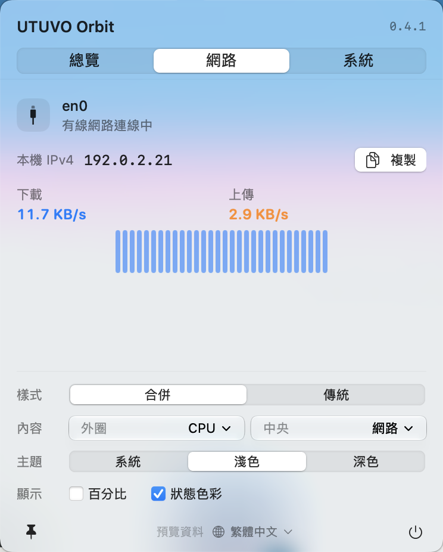
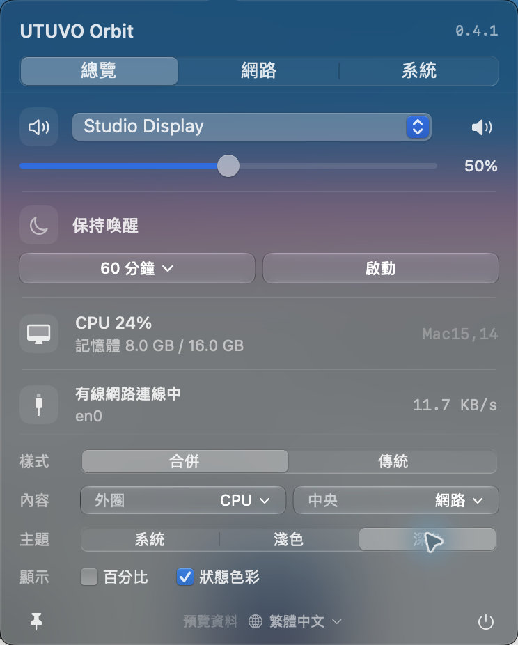
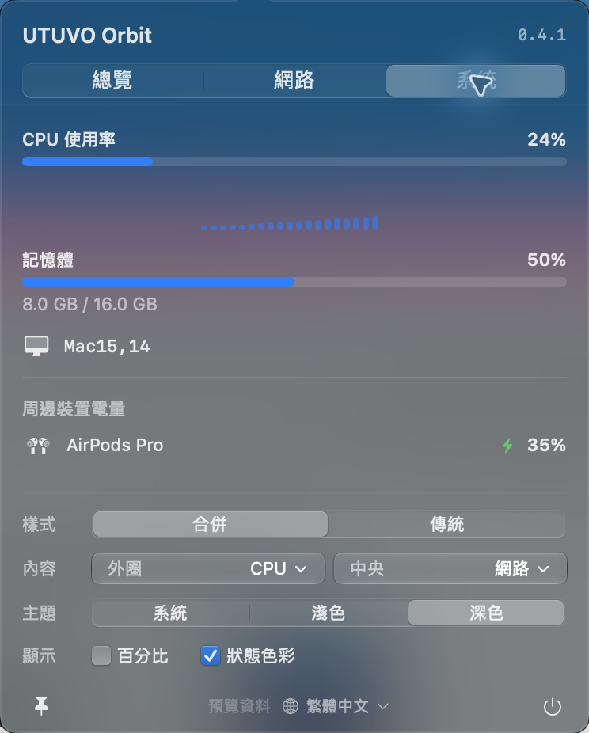

連線狀態，看得更清楚。
目前介面、區域 IP、上下載流量與近期趨勢。這是網路介面的活動，不是測速結果。


電量、網路、音量。
收進一顆小圖示，常用控制一點就到。
0.4.1 · Apple Silicon · macOS 14+
ad-hoc 簽署，尚未 Apple 公證。安裝前請讀這裡

筆電看電量，桌機看 CPU。打開面板就能調音量、切換輸出、設定喚醒時間，或換一個順眼的主題。顯示偏好一直在下方，少一次來回。
目前介面、區域 IP、上下載流量與近期趨勢。這是網路介面的活動，不是測速結果。

CPU、記憶體和周邊電量一眼可見。系統明確回報充電時，才亮起閃電；未知讀值就保留未知。

免費使用，自由修改。原生介面、零第三方執行依賴，從一個實用的小工具開始。
在 GitHub 一起做好它 ↗Liquid Glass 需 macOS 26+。支援英文與繁體中文。